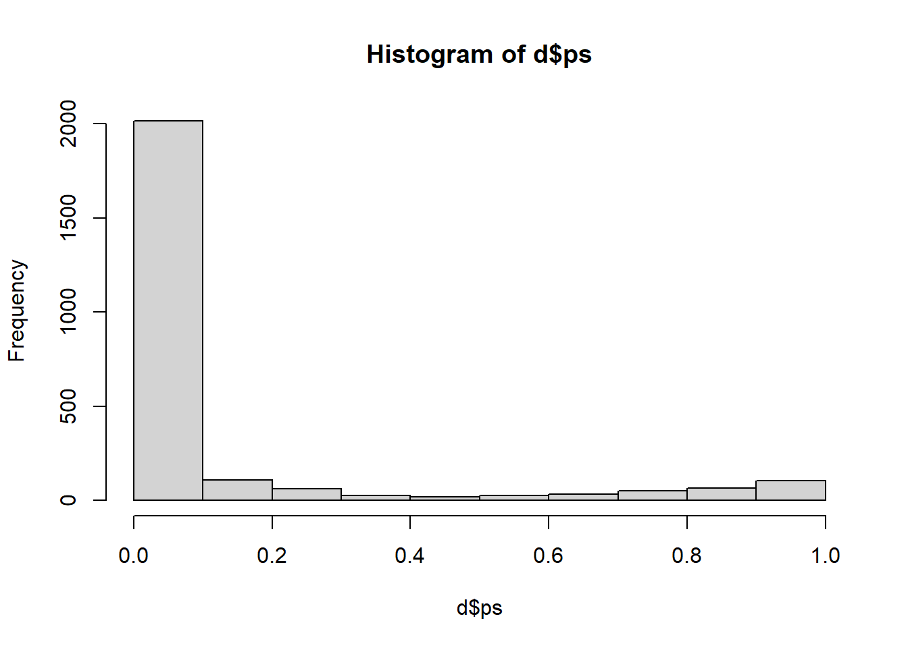
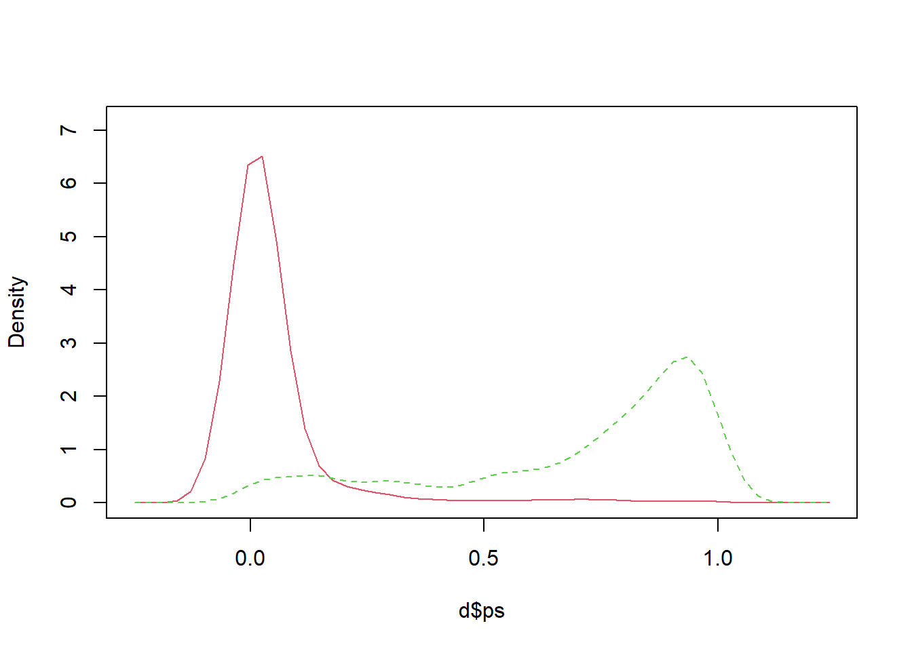
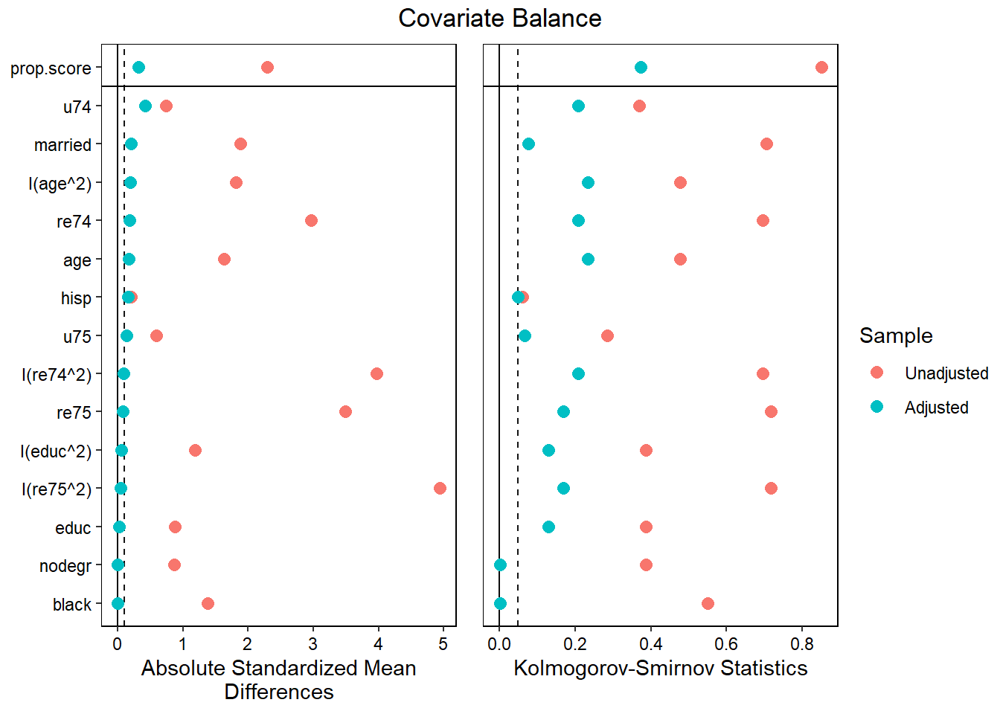
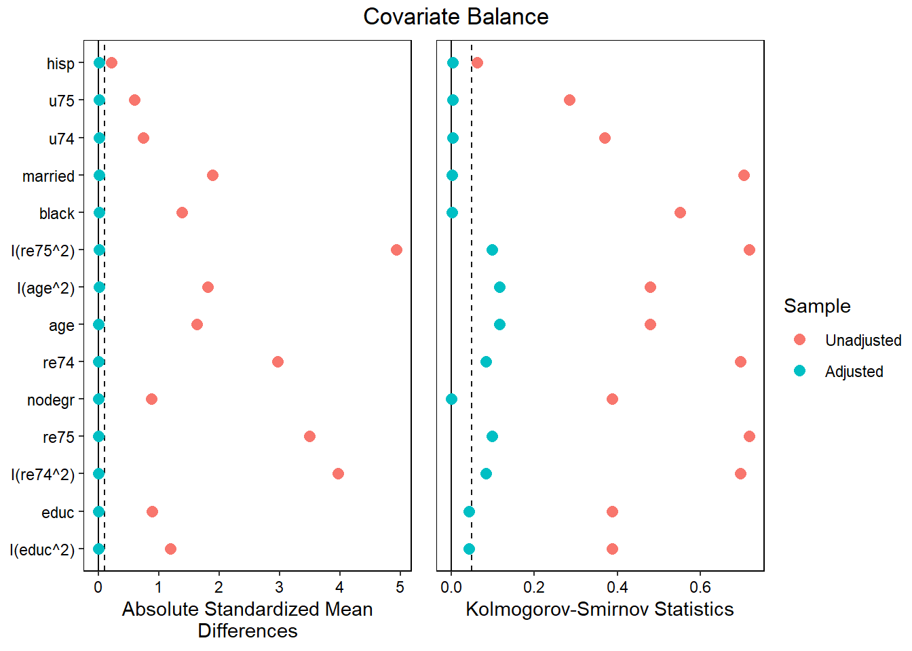

# Packages ---
library(tidyverse)
library(broom)
library(cobalt)
library(MatchIt)
library(WeightIt)
library(sm)
# Helper Functions ---
love_plot <- function(x) {
cobalt::love.plot(x,
binary = "std" ,
stats = c("m", "ks") ,
thresholds = c(.1, .05),
var.order = "adjusted",
abs = TRUE
)
}
#data
load("exercise_data.Rdata")HW 7
Setup
7.1.1
Use the experimental data to estimate the effect of the job training treatment. How much does it appear to affect 1978 income? Now look at the observational data (for all exercises from now on). How large is the raw difference in 1978 income between the treatment group and the PSID comparison group?
## EXPERIMENT
# raw difference in means :D
d_exper %>%
group_by(treat) %>%
summarize(mean = mean(re78))# A tibble: 2 × 2
treat mean
<int> <dbl>
1 0 5.09
2 1 5.98## OBSERVATIONAL
# raw difference in means :D
d %>%
group_by(treat) %>%
summarize(mean = mean(re78))# A tibble: 2 × 2
treat mean
<int> <dbl>
1 0 22.5
2 1 5.98In the experimental data, the treated group has a mean that is 0.886 higher than the untreated group.
In the observational data, the treated group has a mean that is 16.542 lower than the untreated group.
7.1.2
Try to estimate the effect of the treatment using regression. What does regression say the effect of the program is?
# regression for experiment
summary(lm(re78 ~ treat, data = d_exper))
Call:
lm(formula = re78 ~ treat, data = d_exper)
Residuals:
Min 1Q Median 3Q Max
-5.976 -5.090 -1.519 3.361 54.332
Coefficients:
Estimate Std. Error t value Pr(>|t|)
(Intercept) 5.0900 0.3028 16.811 <2e-16 ***
treat 0.8863 0.4721 1.877 0.0609 .
---
Signif. codes: 0 '***' 0.001 '**' 0.01 '*' 0.05 '.' 0.1 ' ' 1
Residual standard error: 6.242 on 720 degrees of freedom
Multiple R-squared: 0.004872, Adjusted R-squared: 0.003489
F-statistic: 3.525 on 1 and 720 DF, p-value: 0.06086# regression for observational
summary(lm(re78 ~ treat, data = d))
Call:
lm(formula = re78 ~ treat, data = d)
Residuals:
Min 1Q Median 3Q Max
-22.518 -9.218 -0.318 7.082 98.482
Coefficients:
Estimate Std. Error t value Pr(>|t|)
(Intercept) 22.5177 0.3193 70.52 <2e-16 ***
treat -16.5413 0.9282 -17.82 <2e-16 ***
---
Signif. codes: 0 '***' 0.001 '**' 0.01 '*' 0.05 '.' 0.1 ' ' 1
Residual standard error: 15.02 on 2508 degrees of freedom
Multiple R-squared: 0.1124, Adjusted R-squared: 0.112
F-statistic: 317.6 on 1 and 2508 DF, p-value: < 2.2e-16Using regression gives us the same results as computing the raw difference in means. However, regression does tell us that this result is statistically significant in the observational data, but not quite so in the experimental data (by conventional standards with a p < 0.05).
7.1.3
Begin by exact matching on all the dummy variables. How many treated cases cannot be matched? What is the (FS)ATT estimate?
d_ematch <-
matchit(treat ~ black + hisp + married + nodegr + u74 + u75,
data = d,
method = "exact")
summary(d_ematch)
Call:
matchit(formula = treat ~ black + hisp + married + nodegr + u74 +
u75, data = d, method = "exact")
Summary of Balance for All Data:
Means Treated Means Control Std. Mean Diff. Var. Ratio eCDF Mean
black 0.8013 0.2517 1.3776 . 0.5497
hisp 0.0943 0.0325 0.2113 . 0.0617
married 0.1684 0.8730 -1.8833 . 0.7047
nodegr 0.7306 0.3434 0.8728 . 0.3872
u74 0.4411 0.0723 0.7427 . 0.3688
u75 0.3737 0.0890 0.5885 . 0.2847
eCDF Max
black 0.5497
hisp 0.0617
married 0.7047
nodegr 0.3872
u74 0.3688
u75 0.2847
Summary of Balance for Matched Data:
Means Treated Means Control Std. Mean Diff. Var. Ratio eCDF Mean
black 0.8049 0.8049 0 . 0
hisp 0.0941 0.0941 0 . 0
married 0.1568 0.1568 0 . 0
nodegr 0.7282 0.7282 0 . 0
u74 0.4216 0.4216 0 . 0
u75 0.3868 0.3868 0 . 0
eCDF Max Std. Pair Dist.
black 0 0
hisp 0 0
married 0 0
nodegr 0 0
u74 0 0
u75 0 0
Sample Sizes:
Control Treated
All 2213. 297
Matched (ESS) 59.52 287
Matched 2092. 287
Unmatched 121. 10
Discarded 0. 0ematch <- match.data(d_ematch)
mod1 <- lm(re78 ~ treat, data = ematch, weights = weights)
summary(mod1)
Call:
lm(formula = re78 ~ treat, data = ematch, weights = weights)
Weighted Residuals:
Min 1Q Median 3Q Max
-109.035 0.610 2.407 4.770 113.179
Coefficients:
Estimate Std. Error t value Pr(>|t|)
(Intercept) 8.2437 0.2317 35.577 < 2e-16 ***
treat -2.3863 0.6671 -3.577 0.000354 ***
---
Signif. codes: 0 '***' 0.001 '**' 0.01 '*' 0.05 '.' 0.1 ' ' 1
Residual standard error: 10.6 on 2377 degrees of freedom
Multiple R-squared: 0.005354, Adjusted R-squared: 0.004936
F-statistic: 12.8 on 1 and 2377 DF, p-value: 0.0003545Only 10 treated cases remain unmatched.
In this model, being in the treatment group is associated with a 2.39 decrease in re78 (the FSATT is -2.39).
7.1.4
Use the observational data to estimate each case’s propensity to receive treatment using glm(). Use a logistic regression with quadratic terms for age, education, 1974 income, and 1975 income. Spend a few moments thinking about what this model says. Look at the density plots of the p-score for treated and untreated groups.
ps <- glm(treat ~ age + educ + black + hisp +
married + nodegr + re74 + re75 +u74
+ u75 + I(age^2) + I(educ^2) + I(re74^2) + I(re75^2),
data = d,
family = "binomial")
summary(ps)
Call:
glm(formula = treat ~ age + educ + black + hisp + married + nodegr +
re74 + re75 + u74 + u75 + I(age^2) + I(educ^2) + I(re74^2) +
I(re75^2), family = "binomial", data = d)
Coefficients:
Estimate Std. Error z value Pr(>|z|)
(Intercept) -4.0860109 2.0931327 -1.952 0.050926 .
age 0.0885744 0.0972988 0.910 0.362647
educ 0.8446841 0.3120974 2.706 0.006800 **
black 1.9621150 0.2719006 7.216 5.34e-13 ***
hisp 2.4117400 0.4512282 5.345 9.05e-08 ***
married -2.0307420 0.2332962 -8.705 < 2e-16 ***
nodegr 0.0177758 0.3420739 0.052 0.958557
re74 -0.0560163 0.0511241 -1.096 0.273214
re75 -0.1544280 0.0418499 -3.690 0.000224 ***
u74 2.3537938 0.4966435 4.739 2.14e-06 ***
u75 -1.2273787 0.4540319 -2.703 0.006866 **
I(age^2) -0.0029497 0.0014994 -1.967 0.049147 *
I(educ^2) -0.0468130 0.0162233 -2.886 0.003908 **
I(re74^2) 0.0012223 0.0016798 0.728 0.466828
I(re75^2) 0.0004442 0.0012405 0.358 0.720281
---
Signif. codes: 0 '***' 0.001 '**' 0.01 '*' 0.05 '.' 0.1 ' ' 1
(Dispersion parameter for binomial family taken to be 1)
Null deviance: 1825.16 on 2509 degrees of freedom
Residual deviance: 610.11 on 2495 degrees of freedom
AIC: 640.11
Number of Fisher Scoring iterations: 9d$ps = predict(ps, d, type = "response")
hist(d$ps)
sm.density.compare(d$ps, as.factor(d$treat))
Our results show that age, educ, black, hisp, and married all have statistically significant effects on selection into treatment.
The density plot suggests that, for the control group, their propensity scores are mostly concentrated around 0, while for the treatment group, their propensity scores are mostly concentrated around 1.
7.1.5
Estimate propensity scores and ATT weights using weightit(). Ignore the warning you get. We’ll discuss that more in class. Estimate the ATT. Check for covariate balance.
mod_weights <- weightit(treat ~ age + educ + black + hisp +
married + nodegr + re74 + re75 +u74
+ u75 + I(age^2) + I(educ^2) + I(re74^2) + I(re75^2),
data = d,
method = "ps",
estimand = "ATT")Warning: Some extreme weights were generated. Examine them with `summary()` and
maybe trim them with `trim()`.love_plot(mod_weights)
summary(lm(re78 ~ treat, data = d, weights = mod_weights$weights))
Call:
lm(formula = re78 ~ treat, data = d, weights = mod_weights$weights)
Weighted Residuals:
Min 1Q Median 3Q Max
-24.136 0.086 0.418 1.226 54.332
Coefficients:
Estimate Std. Error t value Pr(>|t|)
(Intercept) 4.8371 0.1714 28.229 < 2e-16 ***
treat 1.1393 0.2682 4.248 2.23e-05 ***
---
Signif. codes: 0 '***' 0.001 '**' 0.01 '*' 0.05 '.' 0.1 ' ' 1
Residual standard error: 3.555 on 2508 degrees of freedom
Multiple R-squared: 0.007144, Adjusted R-squared: 0.006748
F-statistic: 18.05 on 1 and 2508 DF, p-value: 2.234e-05After adjustment, many predictors remain unbalanced for the treatment and control groups.
The ATT here is 1.139.
7.1.6
Now do the same as above using “entropy balancing.” Confirm that you’ve achieved balance on the means and the variances of the covariates. Estimate the ATT.
entbal <- weightit(treat ~ age + educ + black + hisp +
married + nodegr + re74 + re75 +u74
+ u75 + I(age^2) + I(educ^2) + I(re74^2) + I(re75^2),
data = d,
method = "ebal",
moments = 3,
estimand = "ATT")Warning: The optimization failed to converge in the alotted number of
iterations. Try increasing `maxit`.Warning: Some extreme weights were generated. Examine them with `summary()` and
maybe trim them with `trim()`.love_plot(entbal)
summary(lm(re78 ~ treat, data = d, weights = entbal$weights))
Call:
lm(formula = re78 ~ treat, data = d, weights = entbal$weights)
Weighted Residuals:
Min 1Q Median 3Q Max
-68.289 0.047 0.575 2.386 142.862
Coefficients:
Estimate Std. Error t value Pr(>|t|)
(Intercept) 5.8019 0.1696 34.214 <2e-16 ***
treat 0.1744 0.4930 0.354 0.724
---
Signif. codes: 0 '***' 0.001 '**' 0.01 '*' 0.05 '.' 0.1 ' ' 1
Residual standard error: 7.977 on 2508 degrees of freedom
Multiple R-squared: 4.991e-05, Adjusted R-squared: -0.0003488
F-statistic: 0.1252 on 1 and 2508 DF, p-value: 0.7235They’re finally balanced!! (at least with regard to their means. their distributions do not completely match up, but this is better than we had previously).
The ATT here is 0.174.